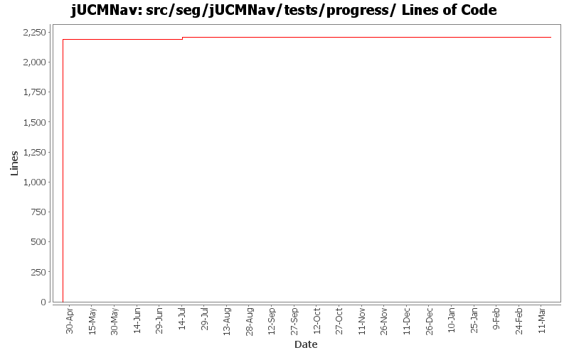

Summary Period: 2005-04-25 to 2006-03-17
[root]/src/seg/jUCMNav/tests/progress

Total Lines Of Code:
2205 (2006-03-31 18:01)
| Author | Changes | Lines of Code | Lines per Change |
|---|---|---|---|
| Totals | 43 (100.0%) | 4393 (100.0%) | 102.1 |
| jpdaigle | 3 (7.0%) | 2188 (49.8%) | 729.3 |
| etremblay | 3 (7.0%) | 2188 (49.8%) | 729.3 |
| jkealey | 32 (74.4%) | 17 (0.4%) | 0.5 |
| jmcmanus | 1 (2.3%) | 0 (0.0%) | 0.0 |
| jfroy | 4 (9.3%) | 0 (0.0%) | 0.0 |
Modification of the import autolayout mechanism(added vector for diagrams to do autolayout)
Fixed 2 tests broke in previous commit.
0 lines of code changed in:
Merge of GRL branch with the main trunk
0 lines of code changed in:
Merge grl branch with the main trunk
Major modification of the metamodel (URN_08.mdl) (Added GRL metamodel, New interfaces that define common element in GRL and UCM, Modified UCM-Map package to implement the new interfaces (some associations and attributes have been refactored using the interfaces), Map is now called UCMmap (to resolve conflict with java.util.map in the implementation), Removed Path Graph)
Modification of the code that used the metamodel.
Started modification of jUCMNav to support GRL.
0 lines of code changed in:
Added export URNSpec extension point and template for DXL export.
0 lines of code changed in:
added graphical overview in outline; according to my tests, it should be okay but needs to be tested more extensively
0 lines of code changed in:
Fix code to support UrnEditor
0 lines of code changed in:
bugs 372 - 378 - 380 - 379 - 273 - 375 - massive changes in deletion command infrastructure. mainly refactoring but also various functionality additions
also committing minor changes to the twiki plugin created by JFRoy and an ant script to generate javadoc on a windows machine.
0 lines of code changed in:
added headers + package.html for all files in the seg.jUCMNav.views.* package. did not clean the files
17 lines of code changed in:
bug 344 - localization wizard
0 lines of code changed in:
Cleaned/commented seg.jUCMNav.model.commands.delete, except for most of the hard ones: DeleteMultiNodeCommand, DeletePathCommand, DeletePluginCommand, DeleteStartNCEndCommand;
Created new command tests.
Added headers in seg.jUMCNav.tests.*
0 lines of code changed in:
cleaned/commented (thankfully was already done) seg.jUCMNav.model.commands.changeConstraints
0 lines of code changed in:
programmed some progress tests.
0 lines of code changed in:
JP: javadoc improvements on private-visibility methods
0 lines of code changed in:
added javadoc for seg.jUCMNav.editors and seg.jUCMNav.editors.resourceManagement. Moved outline to seg.jUCMNav.views.outline package.
0 lines of code changed in:
bug 335: palette wording
bug 344: extracted more strings
0 lines of code changed in:
bug 204 - added comments, refactored and created package.html for seg.jUCMNav.actions
0 lines of code changed in:
fixed tests.
0 lines of code changed in:
patched two tests; we're going to need to code more!
0 lines of code changed in:
bugs 194, 195: timeout paths and waitingplace/timer conditions. took 10 minutes to implement timeout paths, 5 hours to get the friggen timeout path figure refreshed when moving path nodes that are not directly linked. i have not managed to succeed in replicating the behaviour for stub labels.
0 lines of code changed in:
bug 300 - componentref binding bugs; upgrade test suite, found many new bug locations, fixed them all. please write test cases for all new commands.
0 lines of code changed in:
(23 more)
Generated by StatCVS 0.2.4